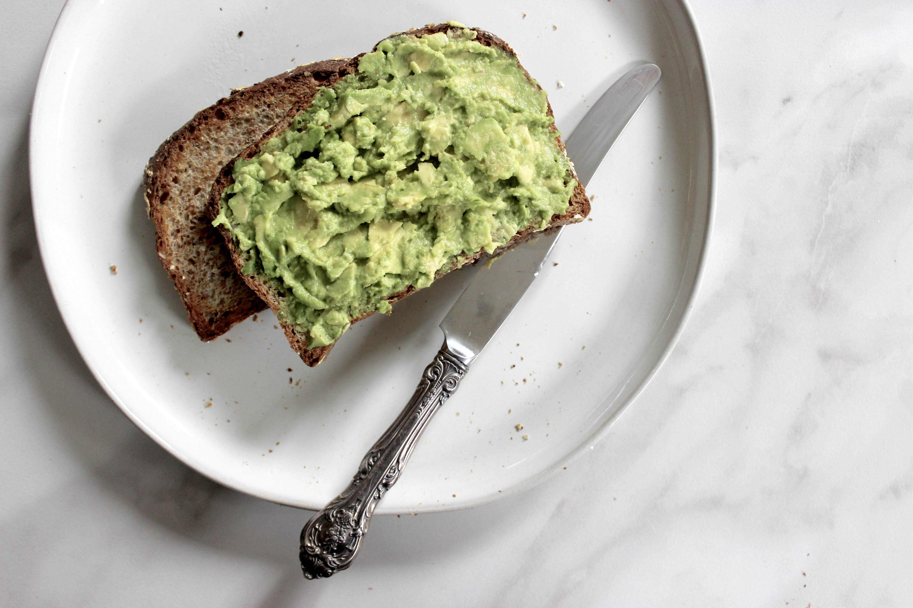
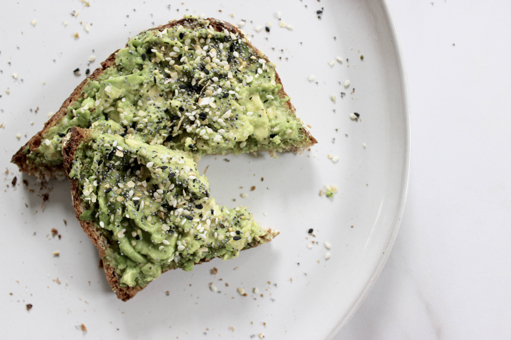
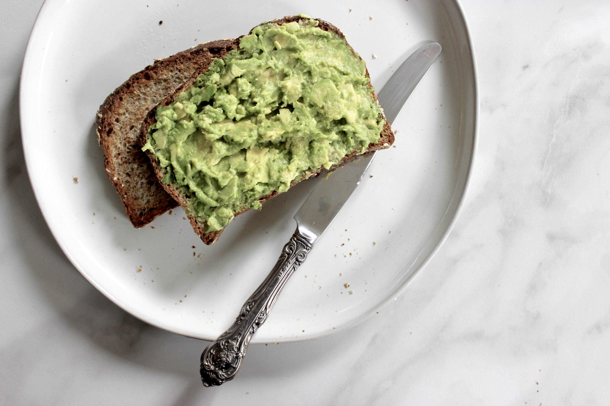
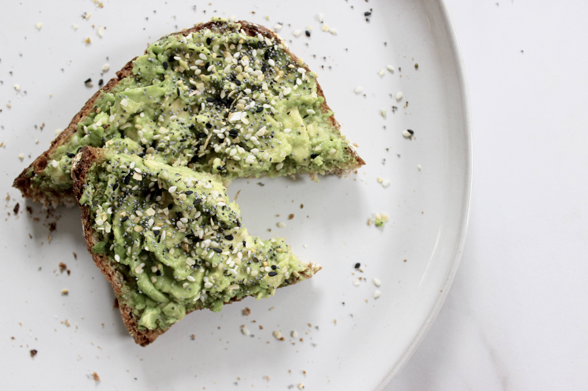

Everything minus the bagel seasoning

It wasn’t until November of last year that I would’ve quite confidently told you that bagels simply weren’t my thing. I was of the opinion that there was way too much chewing involved with a reward that just wasn’t worth the strenuous jaw work. Dramatic, I know. All that was before we arrived at the airport that Wednesday before Thanksgiving of last year. My husband, having a profound love for bagels that I never quite understood, suggested we grab a quick bite before boarding our flight. We stopped at a small shop with muffins, cookies, and bagels. I went ahead and ordered the usual, a whole wheat bagel. We found a place to sit by our gate to sit down and eat our meal before boarding the plane. As I was chewing through my own bagel I couldn’t help but catch a savory whiff of whatever Andrew was chewing on. To my own surprise, I asked if I could have a bite of what turned out to be an everything bagel – and there was no turning back.
Needless to say, my world was flipped upon taking that first bite from an everything bagel. Now I understood what all the bagel hype was about. From that moment onward, it’s as if I needed to make up for all that lost time and have all the uneaten everything bagels I’d forgone. This revelation came to me at a time when I was approximately two weeks away from a big exam and if you’re anything like me, studying makes you hungry (even five minutes after you just ate!) simply because the mind wants to procrastinate. My addiction grew quickly and I was having two, or sometimes three, bagels a day. I told myself that once my exam was over, I couldn’t be having multiple bagels a day. This was a real problem.
We are now past my exam and the bagels had to go cold turkey. That is what inspired this post. In desperate search for an alternative (or need to fill that void), I remembered hearing about Trader Joe’s everything but the bagel seasoning. It’s genius if you ask me but unfortunately, the nearest TJ’s is pretty out of the way from where I live. After some research I quickly realized that this seasoning is simply a mixture of relatively easy to find ingredients from any grocery store. My favorite way to have this is sprinkled over avocado toast but I’m sure it’s just as tasty over a salad. Let me know if you try this and any creative ways in which you use this seasoning. Enjoy!
 



Ingredients
- 2 tbs poppy seeds
- 1 tbs white sesame seeds
- 1 tbs black sesame seeds
- 1 tbs hemp seeds
- 1½ tbs dried minced garlic
- 1½ tbs dried minced onion
- 2 tsp salt
Instructions
- In a bowl or jar, measure and mix all ingredients. Stir until well combined.
Store in a sealed container and enjoy by sprinkling over just about any savory dish.
– Corinna